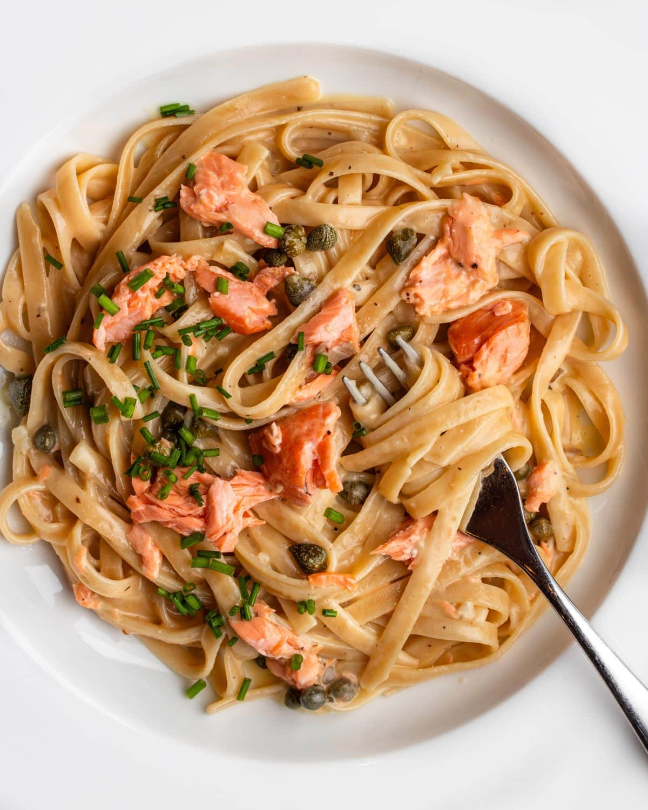

Learn how to make a tasty gluten-free salmon pasta dish specially for people who follow a gluten-free diet.
This is a recipe for beginner friendly people so everyone can make it at home at any times as can be done in 30 minutes.
Step 1
Melt the butter in a skillet, add the salmon (after gently removing the skin) and mix. Sprinkle with lemon juice, let it evaporate, then add the cream, whiskey, salt, and pepper. Cook for 5 minutes.
Step 2
While the salmon mixture is cooking, bring salted water to a boil in a large pot. Add the pasta and cook according to the package instructions.
Step 3
Drain the pasta when it's "al dente," then add it to the pan with the salmon mixture. Mix for about 1 minute over low heat.
Step 4
Place the pasta on a plate and top it with chives or your herb of choice.